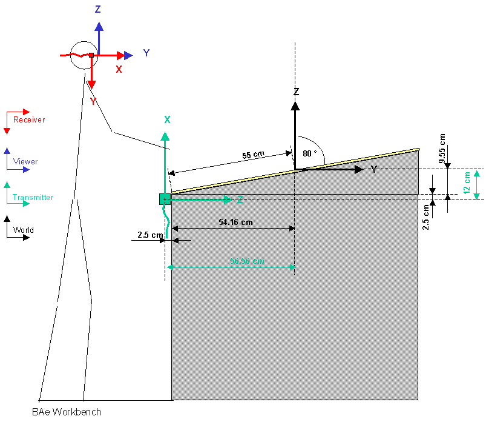

COVER Configuration for the Workbench of the British Aerospace Sowerby Research Center

Transmitter
The Transmitter is mounted on the front wall with x-axis up and y-axis right, z axis in
(cable down and the mounting whole used for mounting it from aoutside to the wall).
Receiver
The Receiver is mounted in the right side of the stereo glasses. If the user stands
in front of the workbench, x-axis is in, z axis is left, y axis is down.
Stylus
used for hand
Screen
Workbench Screen, size is 1800 x 1100 mm. The resolution is 1600x980 in 96 Hz Stereo.
Screen angle 10 degree.
covise.config
COVERConfig
{
TRACKING_SYSTEM POLHEMUS
SCENESIZE 1100
NUM_PIPES 1
NUM_WINDOWS 1
AUTO_WIREFRAME OFF
COORD_AXIS ON
FREEZE ON
#SPOTLIGHT ON
STEREO_SEPARATION 60
NOSEPARATION FALSE
TWOSIDE ON
WELCOME_MESSAGE Welcome to COVISE-VR
LOD_SCALE 1
FPS OFF
}
WindowConfig
{
# WinNo WinName SoftPipeNo Origin[pixel] Size [pixel]
0 FRONT 0 1120 0 1600 980
}
PipeConfig
{
# SoftPipe HardPipe Display
0 0 :0.0
ScreenConfig
{
# ScreenNo ScreenName ScreenSize[mm] ScreenCenter[mm] ScreenOrient hpr [degrees]
0 FRONT 1800 1100 0 0 0 0.0 -80.0 0.0
}
PolhemusConfig
{
SERIAL_PORT /dev/ttyd2 19200
HEMISPHERE 1 0 0
HAND POLHEMUS_STYLUS 1
HEAD POLHEMUS_SENSOR 2
TRANSMITTER_OFFSET_POS 0 -55 -12
TRANSMITTER_OFFSET_EULER -90 0 -90
SENSOR_OFFSET_POS 5 0 10
SENSOR_OFFSET_EULER -90 0 90
STYLUS_OFFSET_POS 0 0 0
STYLUS_OFFSET_EULER -90 0 90
}